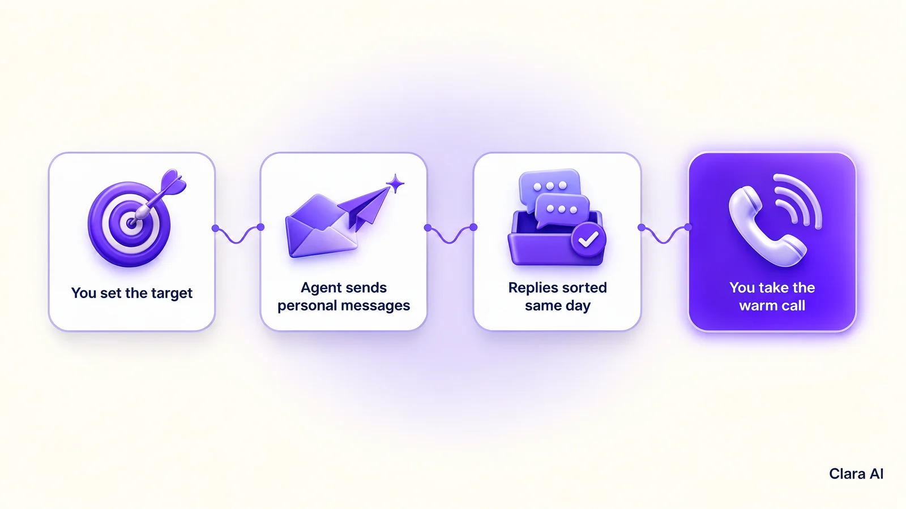

If you hate cold outreach, you are not alone, and you are not wrong to dislike it. Writing to strangers feels awkward, replies are unpredictable and product work always seems more urgent. A LinkedIn outreach agent takes over the daily, repetitive part: finding the right buyers, sending personal messages and following up. You stay for the part you are good at, which is talking to people who already want to hear from you.
Most founders in this position follow the same pattern. They send messages for a week, get busy, stop for a month and then wonder why LinkedIn "does not work". The problem is rarely LinkedIn. It is that outreach needs to happen every week without fail, and that is exactly what a founder with a full calendar cannot promise.
The dislike usually comes from a few real things, not from laziness:
An agent does not remove the need for good outreach. It removes the need for you to do it by hand every day.
Think of it as a careful assistant who works in a browser and reports back. It does the repeatable steps:

An agent should never make you feel like you have lost control of your own name. Here is what stays with you:
For most founders, that is an hour or less a week, instead of an hour a day of work they were avoiding.
The fear of sounding like a bot is fair. Three habits matter most:
This also matters for account safety. LinkedIn's User Agreement restricts automated methods of adding connections or sending messages that go against its rules, so high-volume blasting is the real risk. Our comparison of LinkedIn automation and a LinkedIn agency covers this in more detail.
It depends on your gap. If you enjoy outreach and have time, do it yourself. If you need someone on calls and can manage them, a hire may fit. If your gap is daily consistency, an agent is a lighter option. We compare both in LinkedIn outreach agent vs SDR hire, and look at the SaaS case in our guide to a LinkedIn outreach agent for B2B SaaS.
We only share dated, real numbers. As of 21 Oct 2026, the agent had reached 345 people for Haique Surfaces, with 107 accepting and 14 replying. For Sanjeet Ray, a business coach, October 2026 brought 149 invites, 43 connections, 12 conversations and 3 warm leads. Your numbers will depend on your offer, your market and how clear the target list is.
Judge it over a full month on four numbers: people reached, acceptances, replies from real buyers and booked calls. A busy-looking activity count tells you very little.
Clara AI is a 14-person AI team that builds and runs agents for 19 businesses. We set up the AI LinkedIn Outreach Agent for you and run it, so you do not need a tech team. A person on our team checks the work, and warm replies reach you on WhatsApp. Tell us what you sell and who you want to reach, and we aim to show you a first demo within 7 days. If search traffic matters too, our AI SEO Agent publishes content daily.